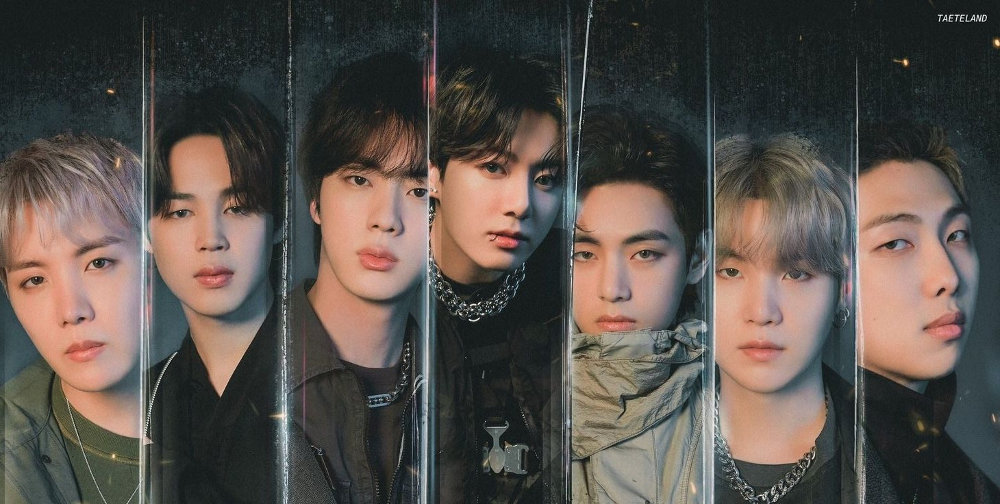

WE L♡VE BTS |
WE L♡VE BTS |

BTS (en hangul, 방탄소년단; romanización revisada, Bangtan Sonyeondan; literalmente, «Boy Scouts a prueba de balas»), también conocido como Bangtan Boys o simplemente Bangtan, es un grupo de K-pop surcoreano formado en 2013. Está compuesto por siete integrantes: Jin, Suga, J-Hope, RM, Jimin, V y Jungkook. Creado dentro del sistema de Idols del K-pop con un fuerte componente de hip hop, el grupo ha incorporado con el tiempo una gran variedad de géneros en su repertorio musical.
Su nombre es una abreviatura de la expresión coreana Bangtan Sonyeondan (en hangul, 방탄소년단; en hanja, 防彈少年團), que literalmente significa «Chicos a prueba de balas». Según el miembro J-Hope, este hace referencia al deseo del grupo de «dejar de lado los estereotipos, críticas, y expectativas dirigidas como balas hacia los jóvenes».[1] En Japón se lo conoce como Bōdan Shōnendan (防弾少年団?), que tiene una traducción similar. El 27 de julio de 2017 se anunció que BTS también sería un acrónimo de «Beyond The Scene [Más allá de la escena]» como parte de su nueva identidad de marca.[2] Esto amplió el simbolismo de su nombre, que representaría además a una «juventud en evolución 'BTS' que se sobrepone a las realidades a las que se enfrenta y que sigue adelante».